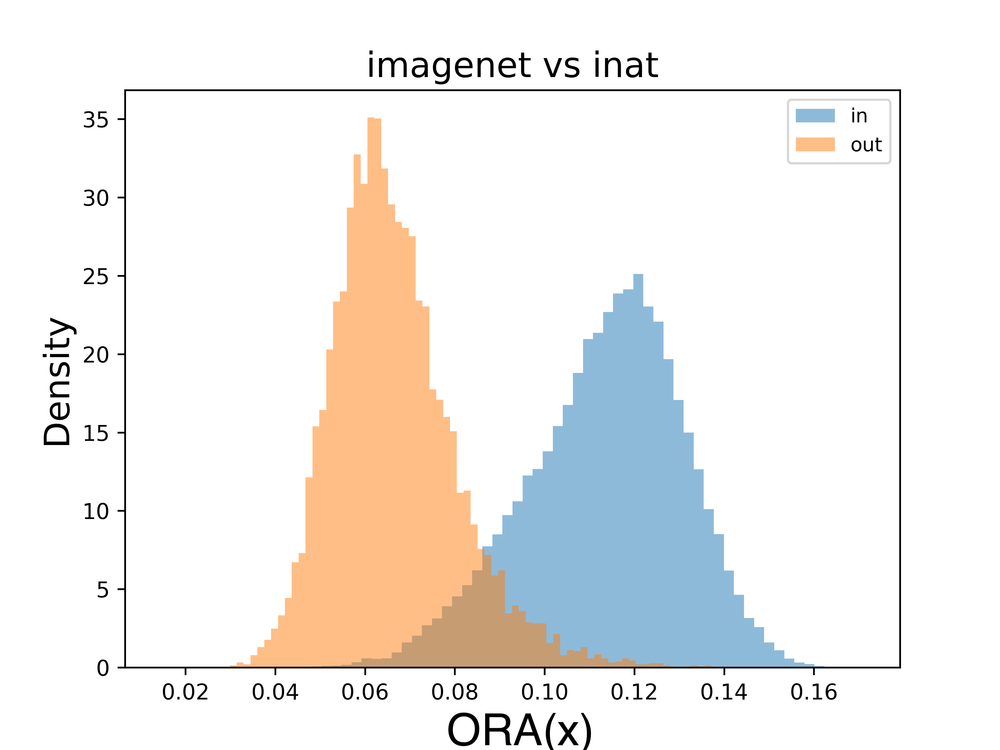

Out-of-Distribution Detection with Relative Angles
A hyperparameter-free, scale-invariant OOD score built on the angle between a feature and a decision boundary, viewed from the in-distribution mean
We propose ORA, a post-hoc out-of-distribution detection score that measures the angle between a feature representation and its projection onto a decision boundary, computed from the reference frame of the mean of in-distribution features. Centering on the ID mean folds in-distribution statistics into the score and makes it translation- and scale-invariant. ORA is hyperparameter-free and model-agnostic: across nine ImageNet-pretrained backbones and twelve baselines it attains the best average FPR95, ranks in the top three for every model, and is best on five of nine. Its scale invariance also lets confidence scores from different models be ensembled by simple summation.
The problem
A trustworthy classifier should recognize when an input does not belong to the distribution it was trained on, and ideally abstain instead of forcing a prediction. This is the out-of-distribution (OOD) detection problem: drawing a line between what the model knows and what it does not (Yang et al. 2024). Post-hoc methods are attractive because they wrap a pre-trained model with a score function and need no retraining (Hendrycks and Gimpel 2022; Liu et al. 2020).
Recent post-hoc scores fall into two families: logit-based scores, which inherit the overconfidence of neural networks, and feature-distance scores such as nearest-neighbor distance (Sun et al. 2022) or distance to a decision boundary (Liu and Qin 2024), which read the geometry of the latent space instead. ORA stays in the feature space but replaces a distance with an angle.
The idea: a relative angle
ORA reads three points in the penultimate feature space: a sample’s representation \mathbf{z}, its projection \mathbf{z}_{db} onto a decision boundary, and the mean \bm{\mu}_{\text{ID}} of the in-distribution features. Centering on \bm{\mu}_{\text{ID}} shifts the origin to the ID mean, so these three points form a triangle. Rather than the raw distance between \mathbf{z} and \mathbf{z}_{db}, ORA uses the angle at the ID-mean vertex.
Concretely, for two classes y_1, y_2 the decision boundary is the hyperplane (\mathbf{w}_{y_1} - \mathbf{w}_{y_2})^\top \mathbf{z} + b_{y_1} - b_{y_2} = 0, and the projection onto it is
\mathbf{z}_{db} = \mathbf{z} - \frac{(\mathbf{w}_{y_1} - \mathbf{w}_{y_2})^\top \mathbf{z} + (b_{y_1} - b_{y_2})}{\|\mathbf{w}_{y_1} - \mathbf{w}_{y_2}\|^2}\,(\mathbf{w}_{y_1} - \mathbf{w}_{y_2}).
The relative angle, taken from the ID-mean reference frame, is
\theta_{y_1, y_2}(\mathbf{z}) = \arccos\!\left(\frac{\langle \mathbf{z} - \bm{\mu}_{\text{ID}},\; \mathbf{z}_{db} - \bm{\mu}_{\text{ID}}\rangle}{\|\mathbf{z} - \bm{\mu}_{\text{ID}}\|\,\|\mathbf{z}_{db} - \bm{\mu}_{\text{ID}}\|}\right),
and the ORA score takes the maximum such angle over all boundaries between the predicted class \hat{y} and every other class y':
\tilde{s}(\mathbf{z}) = \max_{y' \in \mathcal{Y},\, y' \neq \hat{y}}\; \theta_{\hat{y}, y'}(\mathbf{z}).
This packs four properties into one score: it is a confidence proxy (a larger angle means more cost to flip the label), it is ID-aware (the mean folds in in-distribution statistics), it picks the furthest class (the maximum), and it is scale-invariant — angles are unchanged if the feature space is rescaled, which makes scores comparable across different models.1
1 The authors connect ORA to the state-of-the-art fDBD score (Liu and Qin 2024) through the law of sines: fDBD equals \sin\theta / \sin\alpha, where \alpha is a second angle of the same triangle. They argue \alpha tracks the feature’s magnitude relative to the ID mean and is not informative for ID/OOD separation, so dropping that denominator is what gives ORA its edge.
Results
The authors evaluate on the ImageNet OOD benchmark (Deng et al. 2009) across nine backbones — including ConvNeXt (Liu et al. 2022), Swin (Liu et al. 2021), DeiT (Touvron et al. 2021), EVA (Fang et al. 2023) and ResNet-50 (He et al. 2016), with ImageNet-21k pretrained variants where available — against twelve scoring methods. A 50,000-image ImageNet validation set sets the ID scores and the threshold; the OOD sets are iNaturalist (Van Horn et al. 2018), SUN, Places365 and Texture (Cimpoi et al. 2014). Performance is reported as FPR95 (false-positive rate at 95% true-positive rate; lower is better) and AUROC (higher is better).
ORA attains the best average FPR95 of 38.34% across the nine backbones, ahead of the second-best method by 3.18 points; it is the single best method on 5 of 9 backbones and stays within the top three on all nine. Its single best result is 25.04% FPR95 on a ResNet-50 trained with supervised contrastive loss (Khosla et al. 2020).
| Method | Average FPR95 (%) |
|---|---|
| Energy (Liu et al. 2020) | 62.18 |
| MaxLogit | 57.52 |
| NNGuide (Park et al. 2023) | 56.75 |
| MSP (Hendrycks and Gimpel 2022) | 54.78 |
| KNN+ (Sun et al. 2022) | 52.43 |
| R-Mahalanobis (Ren et al. 2021) | 49.50 |
| fDBD (Liu and Qin 2024) | 43.90 |
| R-Cos | 42.98 |
| Maha+ | 42.64 |
| P-Cos (Galil et al. 2023) | 41.52 |
| ORA (ours) | 38.34 |
The score separates ID from OOD cleanly in feature space. On ImageNet (ID) versus iNaturalist (OOD), the ORA scores of the two populations form two largely disjoint distributions:

Contrastive features help. ORA benefits from the geometry that contrastive training imposes on the representation space. On SCL checkpoints it cuts the previous best average FPR95 from 11.85% to 10.97% on CIFAR-10 (Krizhevsky 2009) (ResNet-18) and from 32.78% to 25.04% on ImageNet (ResNet-50). With CLIP (Radford et al. 2021) it reaches 23.94% FPR95 under linear probing and 25.85% in a zero-shot setting that defines decision boundaries from text embeddings.
Ensembling for free. Because the score is scale-invariant, confidence from different models can be aggregated by simply summing their ORA scores. An ensemble of ResNet-50, ResNet-50 (SCL) and ViT-B/16 reaches 22.53% FPR95 and 96.41% AUROC on the ImageNet benchmark, improving on the best single member by 2.51 and 2.15 points respectively. ORA also stacks on top of activation-shaping methods: combined with ReAct (Sun et al. 2021) it drops from 25.04% to 20.36% FPR95, and it pairs likewise with ASH (Djurisic et al. 2023) and Scale (Xu et al. 2024).
Ablations support the two design choices. Centering on the ID mean \bm{\mu}_{\text{ID}} beats centering on predicted- or target-class centroids, and aggregating with the maximum angle across classes beats mean or min aggregation — on ImageNet the max improves FPR95 by 7.72 points over the second-best aggregation. The idea of comparing scale-invariant representations across models follows earlier work on relative representations (Moschella et al. 2023).
Takeaway
Reading model confidence as a relative angle — feature to decision boundary, seen from the in-distribution mean — yields a post-hoc OOD score that is hyperparameter-free, model-agnostic and scale-invariant. That scale invariance is what makes the score both portable across architectures and summable into an ensemble. The authors note one limitation: the score summarizes in-distribution structure by its mean alone, and suggest combining several relative angles to capture more of that structure as future work.
Citation
@inproceedings{demirel2025,
author = {Demirel, Berker and Fumero, Marco and Locatello, Francesco},
title = {Out-of-Distribution {Detection} with {Relative} {Angles}},
booktitle = {Advances in Neural Information Processing Systems},
date = {2025-10-01},
doi = {10.48550/arXiv.2410.04525}
}